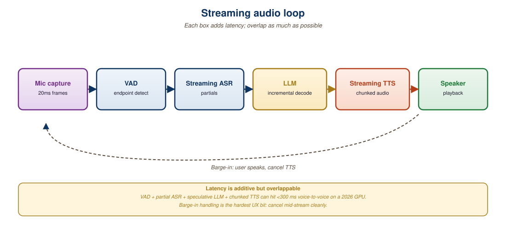

"Anything over 300 milliseconds feels like a phone call. Anything under 200 feels like a conversation."
Echo, Streaming-Live AI Agent
A streaming audio conversation with a model is an unforgiving real-time system. Every millisecond from user speech to model audio output is perceived by the user, and budgets above ~700ms feel awkward. This section walks through the architecture of a streaming audio loop: voice activity detection, frame chunking, codec choice, the LLM's first-token latency, and the synthesized audio's time-to-first-byte. It also covers the harder problem of interruption: the user starts speaking mid-response, and the agent must stop, listen, and resume gracefully. The patterns here apply equally to pipeline architectures (Whisper plus LLM plus TTS) and to native realtime APIs like GPT-4o Realtime (Section 39.3) and Gemini Live.
Prerequisites
This section assumes the conceptual background of Section 37.1 (pipeline vs native) and basic familiarity with WebSocket protocols. Audio codec basics from Chapter 20 are helpful but not required.

39.2.1 The End-to-End Latency Budget
Voice conversational systems live or die by latency below 700 milliseconds, the threshold above which humans perceive a delay as awkward. The number comes from a 1970s study on telephone switching latency and has been silently embedded in every voice product spec since, including the iPhone Siri team's original launch criteria.
The total latency a user perceives is the time from the end of their utterance to the moment they hear the first audible word of the response. Breaking it down for a typical pipeline:
| Stage | Typical Pipeline Latency | Typical Native Realtime Latency | Notes |
|---|---|---|---|
| VAD end-of-speech detection | 200 to 500 ms | 100 to 300 ms | Tunable with silence threshold |
| Audio encoding (codec) | 20 to 40 ms | 20 to 40 ms | Opus or PCM-16 |
| Network round-trip | 30 to 100 ms | 30 to 100 ms | Geographic proximity matters |
| ASR finalization | 200 to 800 ms | n/a (audio fed directly) | Eliminated by native models |
| LLM time-to-first-token | 200 to 600 ms | 150 to 400 ms | Includes prompt processing |
| TTS time-to-first-byte | 100 to 400 ms | 20 to 80 ms | Native models start streaming audio tokens directly |
| Speaker jitter buffer | 50 to 150 ms | 50 to 150 ms | Smooths network jitter |
| Total end-to-end | 800 to 2400 ms | 320 to 1100 ms | Native wins by ~600 ms typical |
Listed sequentially, the latencies add up. In a well-engineered loop they overlap: ASR runs incrementally while the user is still speaking, the LLM begins generating once it sees a coherent partial transcript, and TTS begins synthesizing as soon as the LLM emits the first sentence. End-to-end perceived latency in a well-overlapped pipeline can come in below 800 ms despite the listed sum. Native realtime APIs overlap aggressively by design (audio in, audio out, no discrete stages), which is why their floor is so low.
39.2.2 Voice Activity Detection (VAD)
VAD decides when the user has finished speaking. Two flavors dominate:
- Energy-based VAD: classical signal processing. Watches the audio RMS energy and declares end-of-speech after a silence threshold. Fast and predictable but fooled by background noise.
- Neural VAD: a small ML model (Silero VAD, WebRTC VAD, or the integrated VAD in modern realtime APIs) classifies each 20 to 30 ms frame as speech or silence. More accurate, especially in noisy environments. Silero VAD is the open-source default in 2026; it runs in ~0.5 ms per frame on CPU.
The critical tuning parameter is the silence threshold: how long of a silent stretch ends a turn. Short thresholds (200 ms) make the agent feel responsive but trigger false interruptions when the user pauses mid-thought. Long thresholds (800 ms) avoid false interruptions but make the agent feel sluggish. Production systems typically use 400 to 600 ms with adaptive tuning based on conversational state.
# Silero VAD inference loop for an incoming PCM-16 audio stream.
import torch
import numpy as np
model, utils = torch.hub.load(
"snakers4/silero-vad", "silero_vad", force_reload=False,
)
SAMPLE_RATE = 16000
FRAME_MS = 30
FRAME_SAMPLES = SAMPLE_RATE * FRAME_MS // 1000
SILENCE_END_MS = 500
class TurnDetector:
def __init__(self):
self.silence_ms = 0
self.in_speech = False
def feed(self, frame):
prob = model(torch.from_numpy(frame).float(), SAMPLE_RATE).item()
if prob > 0.5:
self.in_speech = True
self.silence_ms = 0
return "speech"
self.silence_ms += FRAME_MS
if self.in_speech and self.silence_ms >= SILENCE_END_MS:
self.in_speech = False
return "end_of_turn"
return "silence"39.2.3 Streaming ASR or Direct Audio Tokens
Pipeline architectures need a streaming ASR. The 2026 production choices:
- Whisper (faster-whisper, distil-whisper): offline-quality model adapted for streaming with sliding-window inference. Latency 200 to 600 ms per chunk; accuracy high.
- Deepgram Nova-3: hosted commercial streaming ASR with sub-300 ms TTFB on English.
- NVIDIA Riva Parakeet: production-grade streaming ASR optimized for on-prem deployment, sub-150 ms TTFB.
- AssemblyAI Universal-2: hosted, sub-200 ms TTFB with timestamps and speaker diarization.
Native realtime APIs (GPT-4o Realtime, Gemini Live) skip the ASR step entirely. Audio frames are tokenized by an integrated audio codec and fed directly to the LLM. This eliminates the ASR finalization latency entirely; the LLM sees and reacts to the audio stream as it arrives, with no separate transcript stage.
39.2.4 TTS or Direct Audio Output
On the output side, pipeline architectures need a streaming TTS:
- ElevenLabs Turbo v2.5: ~200 ms TTFB, high-quality voices, supports voice cloning.
- OpenVoice v2 / XTTS-v2: open-source, ~300 ms TTFB on a single GPU.
- Cartesia Sonic: 2025-launched commercial TTS with sub-100 ms TTFB.
- Kokoro: 2025 open-source TTS, ~80M parameters, CPU-runnable, ~150 ms TTFB.
Native models emit audio tokens directly from the LLM, decoded by an integrated codec (SoundStream-style for GPT-4o, similar for Gemini Live). TTFB is bottlenecked only by the LLM's first-token latency plus the codec decoder, typically 50 to 100 ms once the LLM begins emitting.
39.2.5 Interruption Handling
The hardest part of streaming audio is interruption: the user starts speaking while the agent is mid-sentence. Three things must happen near-simultaneously:
Think of pre-2024 voice assistants as walkie-talkies and modern realtime APIs as phone calls. On a walkie-talkie, one party transmits, the other waits, and "barging in" is technically impossible. Alexa, Google Assistant, and the original Siri all behaved this way: the user spoke a sentence, the assistant processed and replied, and an interrupt was a hard reset. On a real phone call, both sides can speak at once; the conversation has to detect, suppress its own audio, and remember exactly what the other side actually heard before the talk-over started. OpenAI's Realtime API (October 2024) and Google's Live API are phone calls. The InterruptionManager class below exists because phone-call dynamics require the model to track "what audio actually reached the user's ears," which on a walkie-talkie was always either everything or nothing.
Where this model breaks down: on a phone call, both parties keep their own audio history; in a voice agent, the LLM has to reconstruct what it said from forced-alignment timestamps, because the model itself has no ears.
- Detect: VAD recognizes the user's speech onset over the agent's voice (this is harder than it sounds; echo cancellation is essential).
- Stop: the agent's audio output truncates, the LLM stops generating, and the speaker buffer flushes.
- Preserve context: the agent must remember what it had said so far so its next response can pick up coherently.
# Interruption handler: cancel in-flight LLM and TTS, flush
# speaker buffer, record what was actually heard by the user.
class InterruptionManager:
def __init__(self, llm_handle, tts_handle, speaker):
self.llm = llm_handle
self.tts = tts_handle
self.speaker = speaker
self.spoken_text = ""
def on_user_speech_detected(self):
# 1. Cancel in-flight generation tasks
self.llm.cancel()
self.tts.cancel()
# 2. Compute what audio has actually reached the user's ears
played_samples = self.speaker.samples_played_so_far()
self.speaker.flush()
# 3. Map played samples back to the corresponding text fragment.
# TTS forced-alignment timestamps make this exact.
words_heard = self.tts.words_up_to_sample(played_samples)
self.spoken_text = " ".join(words_heard)
# 4. Append the truncated agent turn to the conversation
# history so the next response can refer back to it.
conversation.add_assistant_turn(self.spoken_text + " [interrupted]")GPT-4o Realtime and Gemini Live both ship with optional server-side VAD that handles interruption automatically. The server detects user speech, cancels the in-flight response, and updates conversation history. This is much simpler than rolling your own and is the default in 2026 production code. The trade-off: server VAD is a black box; if its tuning does not match your acoustic conditions, you may get false interruptions that are hard to debug.
39.2.6 Echo Cancellation and Acoustic Hygiene
When the user and agent share a physical space (laptop speaker, phone speaker), the agent's voice can be picked up by the user's microphone. Without echo cancellation, the agent hears itself and interrupts itself in a feedback loop. WebRTC's AEC3 (acoustic echo canceller, v3) is the de facto solution; it ships in Chrome, Firefox, and most realtime SDKs. For Python-based stacks, the speechmatics-py and livekit-agents libraries integrate AEC3.
Echo cancellation works because the system already knows the signal it is about to play. AEC feeds the loudspeaker's output (the reference signal) into an adaptive filter that estimates the acoustic path from speaker to microphone, the room's delay and reflections. It convolves the reference with that estimated impulse response to predict the echo, then subtracts the prediction from the microphone signal, leaving mostly the user's voice. The filter coefficients are updated continuously with a gradient rule such as normalized least-mean-squares so the estimate tracks the changing room. A residual nonlinear suppressor cleans up what the linear filter misses, which is why AEC stops a voice agent from interrupting itself.
For headset users, the problem evaporates; for phone calls and speakerphone use, AEC3 is non-negotiable. Test the full loop with a speaker and a microphone in the same room before launch, and watch for hallucinated interruptions that indicate echo bleed-through.
Streaming audio failures cluster around acoustics, not models: open laptop speakers without AEC produce phantom interruptions; the user's keyboard typing triggers VAD; an HVAC system creates persistent silence-floor that confuses energy-based VAD. Always test on real consumer devices in noisy environments before launch. The "perfect" audio loop on a quiet developer workstation is meaningless for production.
39.2.7 Deployment Topology and Network Hygiene
Network latency is the easiest source of audio-loop slowdown to fix. Three patterns:
- Edge-deployed VAD and codec: run VAD and audio encoding in the user's browser or edge function. The server only sees compressed frames after a turn boundary.
- WebRTC for media, WebSocket for control: WebRTC's low-latency UDP transport handles the audio stream; a parallel WebSocket carries text messages and tool invocations.
- Geographic routing: route the user to the nearest model endpoint. OpenAI, Google, and Anthropic all have multi-region inference; a Sydney user routed to a US endpoint loses 200+ ms to round-trip.
Who: A 2025 connected-kitchen startup shipping a voice cooking assistant that runs on a counter tablet.
Situation: The assistant read recipes step by step, took follow-up questions ("how much salt?"), and had to feel as fast as a human reading aloud.
Problem: The first prototype routed all audio through the US-east server cluster, producing 1.6 seconds of perceived latency, which felt slow during step-by-step instructions.
Dilemma: Push more work to the device (engineering cost, model footprint on commodity tablet hardware) or keep the server-centric path and try to shave server-side latency through model and region tweaks.
Decision: They moved the latency-dominant stages to the device and only sent compressed end-of-turn audio to the server.
How: VAD and an audio codec ran in the browser via WebAssembly; only end-of-turn audio chunks were sent to the server; the response audio was streamed back through Cartesia Sonic and decoded with WebRTC playout.
Result: End-to-end perceived latency dropped to 480 ms and customer NPS for the voice feature rose from 32 to 68.
Lesson: For consumer voice products, pushing VAD and codec to the edge is one of the highest-ROI latency moves available, because it removes a fixed network round trip from every turn.
Streaming audio is a latency-engineering problem with VAD, network, codec, model, and decoder budgets that must overlap. Native realtime APIs (GPT-4o, Gemini Live) collapse the pipeline stages and hit ~320 ms TTFB; pipeline architectures with aggressive overlap can reach 800 ms. Interruption handling is the hardest mechanic, and modern realtime APIs ship it as a built-in. Echo cancellation and edge-deployed VAD are non-optional for consumer-grade voice UX.
Show Answer
Show Answer
Show Answer
Show Answer
Build a minimal voice loop: mic capture, Silero VAD, streaming Whisper, an LLM call, and Piper TTS. Instrument timestamps at five points: VAD end-of-turn, ASR final token, LLM first token, TTS first byte, speaker first sample. Run 20 utterances and report p50 and p95 for the four stage deltas plus the end-to-end perceived latency.
Answer Sketch
Typical numbers on a single GPU: VAD-to-ASR delta ~100 to 200 ms, ASR-to-LLM-first-token ~200 to 500 ms (depends on the model), LLM-first-to-TTS-first-byte ~50 to 100 ms, TTS-first-byte-to-speaker ~30 to 80 ms. End-to-end p95 ideally under 1.5 seconds for natural conversation; over 2 seconds feels broken. The stage where you should optimize first is the largest one; usually LLM TTFT or the wait for ASR final.
Record 10 short utterances (1 to 5 seconds each) in a quiet environment and 10 more with background music. Run Silero VAD at end-of-turn thresholds {200ms, 500ms, 1000ms} and measure (a) false barge-ins (cuts the user off) and (b) end-of-turn latency. Find the threshold that minimizes total error.
Answer Sketch
200ms: many false barge-ins from the user's natural pauses (counting under 5 false cuts is hard). 1000ms: zero barge-ins but every turn adds 0.5 to 1 second of dead air, making the conversation feel sluggish. 500ms is the canonical sweet spot for clean audio. With background music, the noise floor pushes the optimum toward 700 to 1000ms because VAD picks up music as speech. Lesson: tune per environment, not globally.
What Comes Next
Section 39.3: Gemini Live and GPT-4o Realtime API walks through the specific WebSocket protocols, session management, and function-calling integration for the two leading native realtime APIs.